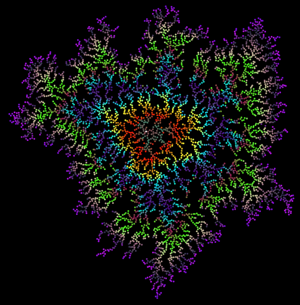
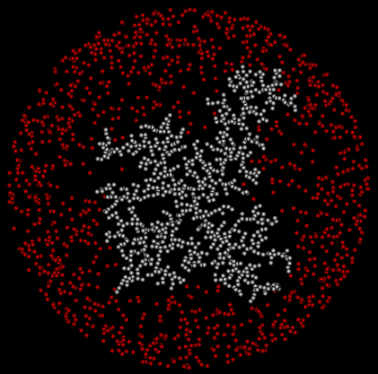
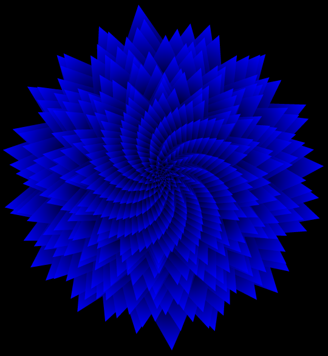
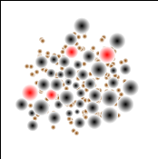
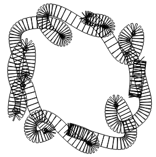
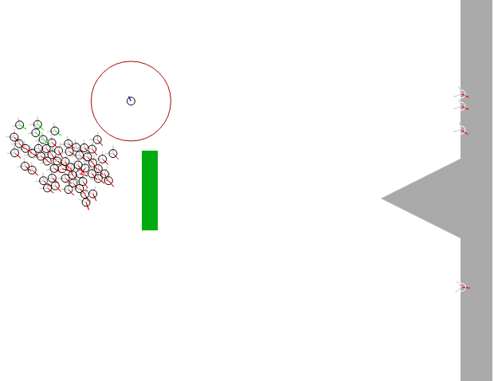

More Coral
Here I used a different algorithm than the one below and also introduced colour.
I think this algorithm gives a nicer shape, clearer branches and more empty space, plus the colours can really pop!
Click for live version, click again for restart
This version only has a single active cell at any given time so doesn't suffer from the multiplicative effects of the one below.
The downside of that is that it's less interesting to watch so to offset that I added colour!
The method for picking colours is pretty simple but effective:
- Pick a starting colour. This is represented as 3 values red, green and blue.
- Pick an ending colour. Now we have 2 points in the 3 dimensional space of red, green and blue.
- Draw an imaginary line between those two colour points and walk the line, one step per cell added
- When you reach the ending colour, pick a new colour and head off towards that one.
I should probably mention that this type of algorithm is known as Diffusion Limited Aggregation and that it's produced by a range of natural phenomena, not just coral. The most, ahem, striking of these is the Lichtenberg Figure which can often be seen on the skin of lightning strike victims.
Coral
The nice branchy, jaggy shape of some corals is formed when baby coral cells float through the water until they stick to something.
We can simulate this by filling an area with moving cells and having them stop and calcify when they hit another calcified cell. This process is started by adding a fixed "seed" in the center
Click for live version, click again to restart
Click here for a faster, less pretty version
I had some speed issues with this one. Just drawing a couple of thousand shaded circles many times a second proved to be a little too much for my PC. I've provided a less pretty version that runs significantly faster.
That wasn't the only performance problem I encountered.
The simulation starts with a couple of thousand live cells. Every live cell has to check against every dead cell to see whether it has collided.
This starts off fast enough but fairly rapidly goes to hell as more and more cells get captured.
- 2000 live cells checking 1 calcified cell = 2000 distance calculations.
- 1800 live cells checking 200 calcified cells = 360,000 distance calculations.
- 1500 live cells checking 500 calcified cells = 750,000 distance calculations.
- 1000 live cells checking 1000 calcified cell = 1,000,000 distance calculations.
Then things start to improve again as the number of live cells gets below 1000.
I should probably mention that this is all happening 50 times a second.
It's fairly remarkable that it ran as fast as it did considering that it had to calculate 50 million distances a second not to mention running the rest of the program.
As you've probably gathered I was pretty sure that the distance calculation was the culprit because I could see the simulation start fast, slow down as it approached the worst case and then speed up again but I profiled it anyway just to be sure. It was indeed the distance calculation that was holding things up.
There are two ways, generally to speed a calculation up. Not doing it is usually the best. I could have turned down the frame rate from 50 to 30 or reduced the number of cells in the simulation.
The other way is to make the calculation faster. This is the one that I went for.
To check if circles collide you have to check the distance between their centers. If that distance is less is less than their combined radii then they have collided.
Most of the time the two cells will be nowhere near one another so it's reasonable to approximate the collision quickly, then do the more accurate calculation if it's needed.
It's much faster to do a bounding box check first. Imagine there's a box around each circle. To determine if the boxes overlap all you have to do is compare coordinates and sizes; none of that fancy Pythagorean square root nonsense.
This simple improvement gave an great increase in performance.
Here's the slow version if you're interested or just want to give your browser a workout. Slow slow version
Petals
This is a great example of a very simple algorithm giving rise to complex and beautiful images.
All there is to this algorithm is the idea that new petals try to move in the direction that will give them as much room as possible.
Click for live version. Click to re-randomize.
You may think that I deliberately start the petals off in a spiral but no, I just drop them in the middle and let them find their own direction.
Here's how:
- Drop a petal in the center.
- Find the average position of all the other petals. This is the least desirable direction.
- Move in the opposite direction.
That's all there is to it.
Well almost, just for fun I made the petals change the direction they're pointing to make it a little more interesting once it's finished and all the petal positions are fixed.
This was inspired by this part of this Vi Hart video where she explains that this is exactly how real plants and flowers work (watch all 3 natural spiral videos).
Bacteria
From the beautiful to the wonderfully ugly. This demo is a simple bacteria like simulation
Click for live version.
The black are the bacteria, red ones are about to die. The brown is erm ... waste.
The static picture really doesn't do justice to the nasty suppurative roiling of the actual demo, check it out, ugh.
So how does it work?
- An initial bacterium is dropped onto a clean surface.
- It starts to grow, when it reaches a certain size it will split in two. The whole nasty mess starts from just a single bug.
- Every once in a while each bacterium will create a pellet of waste. Over this time this waste will disappear.
- When a bacterium is touching a poop it will suffer from toxic effects and get closer to death.
- Bacteria try to stick to other bacteria, not too close but they like to clump together, of course this increases the concentration of their toxic excreta.
The only way for the bacteria to die is from toxic overload. There is no set lifetime nor a limit to the number of bacteria. Their numbers are kept in check purely by the toxicity of their waste.
For me, that's the most interesting thing about this simulation. There's a number in the source code that controls the toxicity of the waste. Tiny changes in this number are the difference between a population that immediately dies out, one that multiplies out of control until my browser runs out of memory and crashes and one that increases only up to a stable population.
There's a metaphor for humanity in there somewhere.
Bezier Curves
Bezier curves are fairly simple parametric curves that smoothly move between specified control points.
Click for animated version.
You can read all about the details of Bezier curves and play with them at this excellent site: Bezier curves - a primer
The trick here, is that to look like a continuous loop each section of the curve must line up with the next perfectly.
I don't think you can see the joins in the animation so that means I must have got it right.
If you've looked at the demo then you can see that there's a little more to it than just static curves. The rest is just picking the control points and moving them around.
There are two sets of points that the curve moves through: one spaced around the edge of a circle alternating with ones spaced around the edge of an ellipse.
Both the circle's radius and the two axes of the ellipse are changing size in time with a sine wave. If you pick a point on the curve and watch it you can see the characteristic fast-slow-fast movement of the sine wave.
The points are also marching around the two shapes which is what gives rise to the rotation of the figure overall. Not to be outdone the ellipse is also rotating. You can see the curve reach out to its widest point and how the widest point rotates around the figure.
Flocking and Herding
A game where the objective is to get the sheep dipped and keep them away from the cliff.
Click to play.
You control the one with the red circle. All the others will run away from you.
Use the arrow keys to move around: up to accelerate, down to decelerate, left and right to turn.
Flocking and herding is a combination of three behaviours: repulsion, alignment and attraction. These behaviours only require local information, no overall controller is necessary. All the different herds, flocks, schools, gaggles and murders you see in nature can be modelled with just these three behaviours.
- Repulsion: don't get too close to your neighbours, if you are too close move away. This behaviour activates at the smallest range.
- Alignment: try to match speed and direction with you fellows. This behaviour activates at a moderate range.
- Attraction: move towards others. This behaviour activates at the largest distance.
Attraction brings flocks together and keeps them together. Repulsion stops individuals from colliding with one-another. Alignment is responsible for the incredible feats of coordination and synchronised movement that flocks are capable of.
Programs that flock like this are known as boids (bird like-object, I prefer to think of it as bird-droids)
There's ton's of information out there about boids but I think this page is the best: Craig Reynolds' Steering Behaviors. It has great demos and descriptions of a range of different programs like boids. Craig Reynolds invented the boid so it's no wonder his page is the best